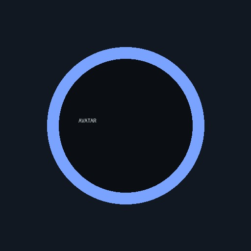

Tsinghua University (2026 — Present)
Ph.D. Student, Institute for Interdisciplinary Information Sciences (IIIS)
Academic Homepage
First-year Ph.D. Student · IIIS, Tsinghua University

I am a first-year Ph.D. student at the Institute for Interdisciplinary Information Sciences (IIIS), Tsinghua University, advised by Prof. Yang Gao. Before that, I received my bachelor's degree from the University of Electronic Science and Technology of China (UESTC), where I was a member of the Everest Experimental Class in the School of Computer Science and Engineering and was fortunate to work with Prof. Zhao Kang.
My research focuses on Embodied AI, especially robot learning and multimodal foundation models. I am also broadly interested in representation learning, learning theory, and scalable learning systems. My long-term goal is to build intelligent agents that can reason, learn, and act robustly in the physical world.
Research interests Embodied AI · Robot Learning · Multimodal Foundation Models · Representation Learning
Ph.D. Student, Institute for Interdisciplinary Information Sciences (IIIS)

B.Eng. in Computer Science and Technology, School of Computer Science and Engineering
Embodied AI · 2025
Exploring how vision-language-action models can generalize physical knowledge through tactile supervision.
Paper ↗* denotes equal contribution.
I contribute to the research community through peer review and academic service.